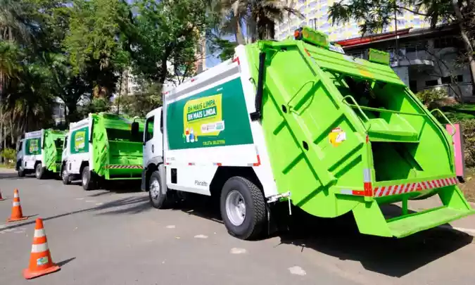
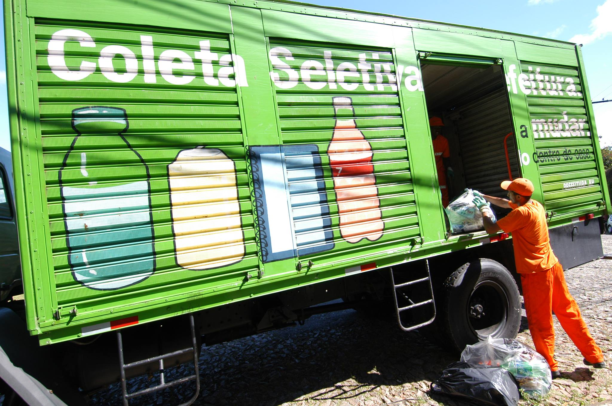

Associação Brasileira de Reciclagem de Eletrônicos e Eletrodomésticos (ABREE) Uma das opções é contar com a ajuda da Associação Brasileira de Reciclagem de Eletrônicos e Eletrodomésticos (ABREE), que mantémonta com diversos pontos emiversas diferentes regiões do país, inclusive na capital mineira. Para conhecer o local de recolhimento mais perto de você, basta acessar o site da ABREE, selecionar qual é o tipo de produto que deseja descartar e incluir o número do seu CEP. Com esses dados, o portal vai indicar os endereços disponíveis.
Prodabel A Prodabel, Empresa de Informática e Informação do Município de Belo Horizonte, também oferece o serviço gratuito de coleta de lixo eletrônico na capital mineira. É possível entrar em contato com a organização para providenciar o agendamento da coleta em domicílio. Se preferir, você também pode fazer a entrega voluntária diretamente na empresa. Confira os dados a seguir:. Telefone: (31) 3277-4771 Endereço: Rua José Clemente Pereira, 440, bairro Ipiranga – Belo Horizonte

O BH Recicla faz a coleta em domicílio de qualquer tipo de produto elétrico ou eletrônico de forma gratuita. É necessário acessar o site, informar alguns dados, inclusive o tipo de equipamento a ser recolhido, e fazer o agendamento. Também é possível entrar em contato por meio do telefone (31) 3063-0688.
Prodabel Green Eletron A Green Eletron é uma organização cujo objetivo é auxiliar empresas no processo de logística reversa. Para conhecer os locais de coleta e identificar o mais próximo de você, basta acessar o site e preencher seu endereço.